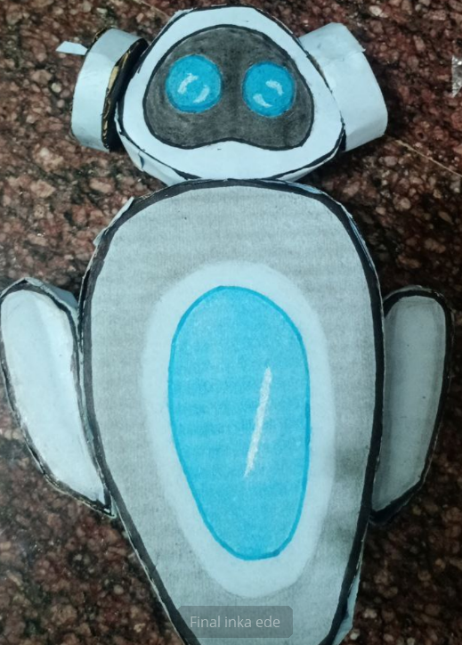

Smart Home Safety & AI Assistant Robot

This project presents a Smart Home Safety & AI Assistant Robot designed to
improve home safety, monitor the environment, control smart appliances,
and assist children with simple guidance when parents are away.
1. Home Safety Features
- Detect gas leakage using gas sensors
- Detect fire and smoke
- Monitor air quality
- Send alerts to the owner's mobile phone
- Sound alarm during emergencies
2. Smart Appliance Control
- Control smart plugs and switches
- Turn off appliances automatically during danger
- Notify users if a device is left ON
- Manage home devices through a mobile app
3. Child Assistance Features
- Notify parents when the child arrives home
- Give reminders for homework or schedules
- Provide simple learning guidance
- Monitor activity and send alerts if needed
4. Mobile App Control
- Receive safety alerts
- Control appliances remotely
- Stop the robot anytime
- Check gas level, smoke status, and temperature
5. Emergency System
- Sends emergency alerts to parents
- Activates a loud alarm
- Messages emergency contacts
Conclusion
The Smart Home Safety & AI Assistant Robot combines home automation,
safety monitoring, and basic AI assistance into a single system.
It helps improve home safety and provides useful assistance when
homeowners are not present.